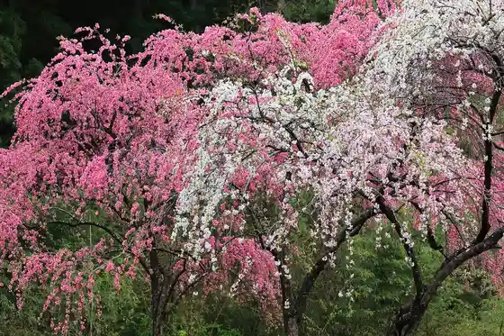
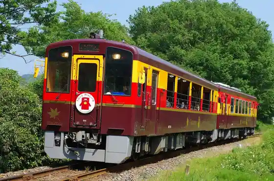
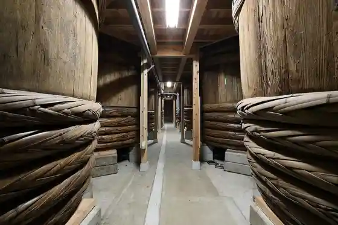

Sayo Ko Ohata (Sayado Ohata) Hanamomo Kaido
Midorishi, Gunma · 0277-46-7289 · Official / source link

Watarase Keikokutetsudo
Midorishi, Gunma · 0277-73-2110 · Official / source link

Somoku Mizumi Kanu
Midorishi, Gunma · 0278-72-5070 · Official / source link
(Kabu) Oka Naosaburo Shoten Omama Kojo
Midorishi, Gunma · 0277-72-1008 · Official / source link

Somoku Damu Kengaku
Midorishi, Gunma · 0277-97-2131 · Official / source link
Akagiyama (Kondo Shuzo (Kabu))
Midorishi, Gunma · 0277-72-2221 · Official / source link
Shika no Kawa Numa (Sakura)
Midorishi, Gunma · 0277-46-7289 · Official / source link
Mizu no Plaza (Sakura)
Midorishi, Gunma · Official / source link
Nagame Park Nagame Yokyo Ba
Midorishi, Gunma · 0277-72-1968 · Official / source link
Kodaira no Sato Botanical Garden (Robai)
Midorishi, Gunma · 0277-73-2006 · Official / source link
Kasakake Town Fukiage Chiku Himawari Hanahata
Midorishi, Gunma · Official / source link
Iwajuku Village (Katakuri)
Midorishi, Gunma · 0277-46-7289 · Official / source link
Konaka Otaki (Kesakake Hashi)
Midorishi, Gunma · 0277-46-7289 · Official / source link
Kesa Maruyama
Midorishi, Gunma · 0277-46-7289 · Official / source link
Konaka Otaki
Midorishi, Gunma · 0277-46-7289 · Official / source link
Sawairi Eki (Ajisai)
Midorishi, Gunma · Official / source link
Kanto Kikka Taikai (Midorishi Omama)
Midorishi, Gunma · 0277-76-1270 · Official / source link
Ressha no Resutoran Seiryu (Kobeki Konai)
Midorishi, Gunma · 0277-97-3681 · Official / source link
Iwajuku Museum
Midorishi, Gunma · 0277-76-1701 · Official / source link
Midorishi Omama Museum (Ko no Donto Kan)
Midorishi, Gunma · 0277-73-4123 · Official / source link
Roadside Station Tomihiro Art Museum
Midorishi, Gunma · 0277-95-6333 · Official / source link
Midorishi Kanko Puromoshombideo (Midorishi no Shiki)
Midorishi, Gunma · 0277-76-1270 · Official / source link
Takatsu Ko Kyo
Midorishi, Gunma · 0277-46-7289 · Official / source link
Somoku Mizumi
Midorishi, Gunma · 0277-46-7289 · Official / source link
Onsen Chaya Kami Ume Kan
Midorishi, Gunma · 0277-73-0355 · Official / source link
Somoku Doraibuin
Midorishi, Gunma · 0277-95-6136 · Official / source link
Kodaira Village Tanukiana Tei (Mamianatei)
Midorishi, Gunma · 0277-73-2006 · Official / source link
Iwajuku Iseki
Midorishi, Gunma · 0277-76-1701 · Official / source link
Kodaira Village Shinsui Park
Midorishi, Gunma · 0277-73-2006 · Official / source link
Gunma no Somoku Mizumi De Kanu Kayakku Tour (Minami no Kanu Ya San)
Midorishi, Gunma · 080-2798-2014 · Official / source link
Somoku Mizumi SUP (Sappu)
Midorishi, Gunma · 0278-72-5070 · Official / source link
Mino Ya
Midorishi, Gunma · 0277-72-3069 · Official / source link